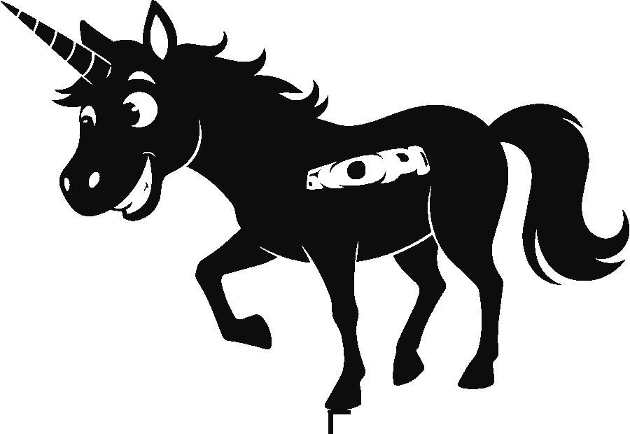

<!DOCTYPE html>
<html lang="ru">
<head>
<meta charset="UTF-8">
<meta name="viewport" content="width=device-width, initial-scale=1.0">
<meta name="robots" content="noindex">
<title>Таблички на столы — SDD Doctor</title>
<link rel="icon" href="assets/logo.png">
<link rel="stylesheet" href="assets/styles.css">
<style>
/* ---------------------------------------------------------------------------
 * Печатная табличка на стол. A4 альбомная (297×210 мм), одна на страницу.
 *
 * Стили здесь свои, а не из дизайн-системы, и это осознанно:
 * сайт тёмный, а печать должна быть СВЕТЛОЙ. Тёмный лист выжигает картридж,
 * а QR белым по чёрному читается не всеми сканерами телефонов.
 *
 * Это НЕ отступление от айдентики: у Бюро есть светлая «бумажная» полярность —
 * чёрные силуэты и моноширинный текст на почти-белом листе. Для печати она
 * подходит лучше тёмной, и заодно снимает вечную возню с «Фоновой графикой».
 *
 * Все размеры в мм и подобраны под A4. При смене формата масштабировать надо
 * ВСЁ вместе с листом, иначе на большом листе останется мелкая вёрстка.
 * ------------------------------------------------------------------------- */

.sheet {
  width: 297mm; height: 210mm;
  background: #fff; color: #0D0D0D;
  padding: 17mm 20mm;
  display: flex; flex-direction: column;
  font-family: var(--mono);
  margin: 0 auto 10mm;
  box-shadow: 0 6px 28px rgba(0,0,0,.5);   /* только на экране, при печати не виден */
  position: relative; overflow: hidden;
}
/* Фирменная полоса сверху — три акцента жёсткими стыками, без растяжки.
   Те же три цвета и в том же порядке, что точки в шапке окна на сайте. */
.sheet::before {
  content: ""; position: absolute; left: 0; right: 0; top: 0; height: 8mm;
  background: linear-gradient(90deg,
    #F84D15 0 33.34%, #FED000 33.34% 66.67%, #47BAD5 66.67% 100%);
}

.sheet .head { display: flex; align-items: center; gap: 5mm; margin-top: 2mm; }
/* Знак — единорог сплошным чёрным, а не логотип SDD Day: тот тёмный круг
   с градиентом cyan→violet, источник СТАРОЙ палитры, и на белом листе он
   сидит кляксой. В рестайленной адженде его тоже нет.
   Заливка сплошная, не водяной знак: бледная заливка на офисном лазернике
   рассыпается в точки или пропадает совсем. Силуэт широкий, поэтому
   задаётся высота, а ширина считается сама. */
.sheet .head img { height: 15mm; width: auto; }
.sheet .head .ev { font-weight: 700; font-size: 6.6mm; letter-spacing: .3mm; }
.sheet .head .sub { font-size: 4.4mm; color: #6E6E68; margin-top: 1mm; }

/* Три зоны вместо двух: СТОЛ | КТО ЭТО И ЧЕМ ПОМОЖЕТ | КАК ЗАПИСАТЬСЯ.
   В двухколоночном варианте центр листа пустовал: имя и чип не заполняли
   ширину. Теперь номер вынесен в отдельную панель, а освободившийся центр
   занимает описание опыта доктора. */
/* min-height:0 + overflow обязательны: без них длинное описание раздувает
   .body и выдавливает подвал за край листа, где его срезает overflow:hidden.
   Тексты дополнительно ограничены по строкам ниже. */
.sheet .body { flex: 1; min-height: 0; overflow: hidden;
               display: flex; gap: 10mm; align-items: stretch; padding: 6mm 0; }

/* --- Зона 1: номер стола --- */
.sheet .tcol {
  width: 62mm; flex: none;
  border: .6mm solid #D5D4D0; border-radius: 6mm; background: #EAE9E7;
  display: flex; flex-direction: column; align-items: center; justify-content: center;
}
.sheet .tno-label { font-size: 5mm; font-weight: 700; letter-spacing: 2mm;
                    color: #6E6E68; text-transform: uppercase; }
/* Номер — сплошным чёрным, а не градиентным текстом.
   background-clip:text печатается только при включённой «Фоновой графике»,
   иначе главный элемент таблички исчез бы с листа целиком.
   Чёрный по светлой плашке — самое читаемое издалека, что бывает,
   и ровно то, как набраны крупные акценты в референсе. */
/* letter-spacing здесь НЕ трогать: отрицательный трекинг ужимает и последний
   символ тоже, из-за чего у цифр с выносом вправо (3, 5) подрезался правый бок.
   Номера однозначные, экономить ширину не на чем. */
.sheet .tno { font-size: 74mm; font-weight: 700; line-height: 1;
              letter-spacing: normal; color: #0D0D0D; }

/* --- Зона 2: доктор --- */
/* Блок доктора прижат к верхней границе плашки с номером — так алиас и текст
   под ним выстраиваются в одну линию с её верхом. QR при этом остаётся
   отцентрованным по высоте плашки. */
.sheet .who-col { flex: 1; min-width: 0; min-height: 0; overflow: hidden;
                  display: flex; flex-direction: column; justify-content: flex-start; }
/* Фотографии здесь больше нет: изображение лица — персональные данные,
   см. specs/60-backlog.md. Освободившиеся 30 мм отданы алиасу — он теперь
   единственное, чем доктор представлен, и должен читаться через стол. */
/* Эмблема доктора — рисунок по алиасу и опыту, не фотография (фото это
   персональные данные, см. specs/60-backlog.md). Стоит там же, где на прежнем
   макете стояла фотография: слева от алиаса, между панелью стола и текстом.

   Цену этого места стоит знать: колонка сужается на ширину эмблемы с отбивкой,
   и длинный алиас теперь охотнее уезжает на вторую строку. Поэтому эмблема
   заметно меньше прежнего фото, а не в его размер. */
.sheet .who { min-width: 0; display: flex; gap: 5mm; align-items: flex-start; }
.sheet .who img.ava { width: 26mm; height: 26mm; flex: none; }
.sheet .who-t { min-width: 0; }

/* Длинные алиасы и роли встречаются, поэтому все тексты ограничены
   по числу строк — макет не должен зависеть от того, что напишут в админке. */
.sheet .clamp { display: -webkit-box; -webkit-box-orient: vertical; overflow: hidden; }
.sheet .name { font-size: 12mm; font-weight: 700; line-height: 1.1; -webkit-line-clamp: 2; letter-spacing: -.2mm; }
.sheet .role { font-size: 4.4mm; color: #6E6E68; margin-top: 1.5mm; line-height: 1.25; -webkit-line-clamp: 2; }
/* Обрезка живёт во внутреннем .spec-t, а не на самом чипе: при clamp прямо
   на padding-элементе из-под второй строки выглядывал обрезок третьей.
   inline-block — чтобы чип обжимал текст, а не растягивался полосой во всю колонку. */
/* Жёлтая заливка — стикер из айдентики Бюро. Если в настройках печати забудут
   «Фоновую графику», останется чёрный текст в рамке: деградирует читаемо. */
.sheet .spec { display: inline-block; margin-top: 5mm; padding: 2mm 4mm; max-width: 100%;
               font-size: 4.6mm; font-weight: 700; color: #0D0D0D; line-height: 1.3;
               border: .5mm solid #0D0D0D; background: #FED000; border-radius: 2mm; }
.sheet .spec-t { display: -webkit-box; -webkit-box-orient: vertical; overflow: hidden;
                 -webkit-line-clamp: 2; }
.sheet .bio-title { margin-top: 6mm; font-size: 3.6mm; font-weight: 700; letter-spacing: 1mm;
                    color: #8A8A85; text-transform: uppercase; }
/* Опыт — единственный абзац прозы на листе, поэтому наборным шрифтом:
   строки моноширинного читаются заметно медленнее.
   Число строк здесь — только базовое: 8 влезает даже в худшем случае, когда
   алиас, роль и чип разошлись каждый на две строки. Фактический предел
   считает fitBio() после загрузки шрифтов — колонка почти всегда короче
   худшего случая, и остаток отдаётся тексту, а не белому полю. */
.sheet .bio { margin-top: 2mm; font-family: var(--font); font-size: 4.6mm; line-height: 1.4;
              color: #353533; -webkit-line-clamp: 8; }

/* --- Зона 3: запись --- */
.sheet .right { width: 68mm; flex: none; display: flex; flex-direction: column;
                align-items: center; justify-content: center; }
.sheet .right img.qr { width: 66mm; height: 66mm; display: block; }
.sheet .qr-cap { font-size: 4.2mm; color: #6E6E68; margin-top: 3mm; line-height: 1.35; text-align: center; }
/* Напоминание про отзыв — отдельным блоком под чертой: это второе действие,
   и слипшись с инструкцией по записи оно читалось как её продолжение. */
.sheet .qr-cap.after { margin-top: 4mm; padding-top: 3mm; border-top: .4mm solid #D5D4D0;
                       color: #0D0D0D; font-weight: 700; }

.sheet .foot { display: flex; align-items: center; justify-content: space-between;
               border-top: .5mm solid #D5D4D0; padding-top: 4mm; font-size: 4.4mm; color: #6E6E68; }
.sheet .rule-strong { font-size: 6mm; font-weight: 700; color: #0D0D0D; }

.warn { color: #F84D15; font-size: 5mm; font-weight: 700; }

/* Лист шире, чем контейнер сайта, — иначе превью обрезалось бы по краям. */
.wrap { max-width: none; }
#sheets { overflow-x: auto; }

@page { size: A4 landscape; margin: 0; }

@media print {
  body { background: #fff !important; }
  .no-print { display: none !important; }
  .wrap { max-width: none; padding: 0; }
  header.top { display: none; }
  .sheet { box-shadow: none; margin: 0; page-break-after: always; break-after: page; }
  .sheet:last-child { page-break-after: auto; break-after: auto; }
}
</style>
</head>
<body class="tool">

<header class="top no-print" id="hdr"></header>

<div class="wrap">
  <div class="banner hidden no-print" id="banner"></div>
  <div class="no-print" id="controls"></div>
  <div id="sheets"><div class="skel"></div></div>
  <footer class="no-print" id="foot"></footer>
</div>

<script src="config.js"></script>
<script src="assets/app.js"></script>
<script src="assets/mock.js"></script>
<script>
/* ---------------------------------------------------------------------------
 * Таблички на столы для печати. Доступ: card.html?t=<admin_token>
 *
 * QR на всех табличках ОДИН и тот же — общий, на витрину докторов.
 * Дип-линки на конкретный стол делать не стали: человек, отсканировавший код
 * у занятого стола, упёрся бы в «мест нет», не увидев остальных докторов.
 * Табличка отвечает за навигацию по залу (крупный номер и фамилия),
 * а выбор доктора происходит на витрине.
 * ------------------------------------------------------------------------- */

/* Токен здесь не нужен и не должен быть нужен. Раньше страница ходила
 * в admin_list_doctors, то есть требовала админский токен — а тот отдаёт
 * ещё и токены всех докторов. Ссылка на печать табличек фактически была
 * ссылкой в админку: достаточно поменять card.html на admin.html в адресе.
 *
 * Публичная v_doctors отдаёт ровно то, что нужно табличке, и уже отфильтрована
 * по active. Ничего секретного на листе нет: алиас, стол и QR и так лежат
 * на столах и видны на витрине. */
let DOCS = [];

const $ = (id) => document.getElementById(id);
const deny = (m) => { $('sheets').innerHTML = `<div class="notice">${App.esc(m)}</div>`; };

async function load() {
  try {
    DOCS = await App.select('v_doctors', 'select=*&order=sort.asc,alias.asc');
    render();
  } catch (e) {
    deny('Не удалось загрузить докторов. Проверьте связь.');
  }
}

function render() {
  const active = DOCS;

  $('controls').innerHTML = `
    <div class="row-between" style="margin:18px 0 14px">
      <div>
        <div class="section-title" style="margin:0">Таблички на столы</div>
        <div style="color:var(--muted);font-size:13px;margin-top:4px">
          A4 альбомная, по одной на страницу. Печатать на плотной бумаге,
          в настройках печати снять «Поля» и включить «Фоновая графика».
        </div>
      </div>
      <button class="btn sm" id="btnPrint">Печать</button>
    </div>`;
  $('btnPrint').onclick = () => window.print();

  if (!active.length) return deny('Нет активных докторов. Заведите их в админке.');

  $('sheets').innerHTML = active.map(sheet).join('');
  fitBio();
  $('foot').textContent =
    `Готово табличек: ${active.length}. QR один на всё мероприятие и ведёт на витрину — при замене доктора он остаётся рабочим.`;
}

/* Подгонка «Опыта» под фактический остаток колонки.
 *
 * Клэмп в CSS обязан быть посчитан на худший случай — иначе длинный алиас
 * выдавит текст за край листа. Но худший случай редок: обычно алиас в одну
 * строку, и под абзацем оставалось пустое поле в треть колонки.
 *
 * Здесь меряется, сколько места реально осталось под заголовком «Опыт»,
 * и клэмп поднимается до этого числа строк. Считать надо ПОСЛЕ загрузки
 * шрифтов: до неё метрики фолбэка врут, и строк насчитается больше, чем влезет.
 * Минимум 5 — как было; ниже не опускаемся, даже если что-то намерялось криво. */
function fitBio() {
  const apply = () => document.querySelectorAll('.sheet .bio').forEach((bio) => {
    const col = bio.closest('.who-col');
    if (!col) return;
    const lineH = parseFloat(getComputedStyle(bio).lineHeight);
    if (!lineH) return;
    const avail = col.getBoundingClientRect().bottom - bio.getBoundingClientRect().top;
    bio.style.webkitLineClamp = Math.max(5, Math.floor(avail / lineH));
  });
  apply();
  if (document.fonts && document.fonts.ready) document.fonts.ready.then(apply);
  // Пересчёт перед печатью: диалог печати пересобирает раскладку под свой DPI,
  // и посчитанное на экране число строк может разойтись с тем, что влезет на лист.
  // Листенер один на страницу: apply() каждый раз обходит актуальный DOM,
  // так что вешать новый на каждый render() незачем.
  if (!fitBio.bound) { fitBio.bound = true; window.addEventListener('beforeprint', () => fitBio()); }
}

function sheet(d) {
  const n = d.table_no;
  // Один и тот же общий QR на всех табличках — ведёт на витрину докторов.
  // Вторая строка — единственное напоминание про отзыв, которое физически лежит
  // на столе. Технических каналов вернуть человека к форме у нас нет: пуши
  // требуют разрешения, почту и телефон мы не собираем. См. specs/60-backlog.md.
  const qr = `
       <div class="qr-cap">Наведите камеру телефона,<br>выберите доктора и свободное время</div>
       <div class="qr-cap after">После приёма —<br>оцените визит<br>по тому же коду</div>`;

  return `
    <div class="sheet">
      <div class="head">
        
        <div>
          <div class="ev">${App.esc(CONFIG.EVENT)} · Визит к SDD-доктору</div>
          <div class="sub">${App.esc(App.fmtDate(App.mskDate(CONFIG.DAY, '12:00')))} · ${App.esc(CONFIG.PLACE)} · практическая зона</div>
        </div>
      </div>

      <div class="body">
        <div class="tcol">
          <div class="tno-label">Стол</div>
          <div class="tno">${n ? App.esc(n) : '—'}</div>
          ${n ? '' : '<div class="warn" style="text-align:center;padding:0 4mm">Номер стола не задан<br>— проставьте в админке</div>'}
        </div>

        <div class="who-col">
          <div class="who">
            
            <div class="who-t">
              <div class="name clamp">${App.esc(d.alias)}</div>
              ${d.role ? `<div class="role clamp">${App.esc(d.role)}</div>` : ''}
            </div>
          </div>

          ${d.specialty ? `<div><span class="spec"><span class="spec-t">${App.esc(d.specialty)}</span></span></div>` : ''}

          ${d.bio ? `<div class="bio-title">Опыт</div>
                     <div class="bio clamp">${App.esc(d.bio)}</div>` : ''}
        </div>

        <div class="right">${qr}</div>
      </div>

      <div class="foot">
        <div class="rule-strong">Приём только по записи</div>
        <div>${App.esc(CONFIG.WINDOW.start)}–${App.esc(CONFIG.WINDOW.end)} ·
             приём ${App.esc(CONFIG.SLOT_MINUTES)} мин · опоздание ${App.esc(CONFIG.HOLD_MINUTES)} мин</div>
      </div>
    </div>`;
}

App.renderHeader($('hdr'), 'Таблички на столы', 'sdd-day/print/table-cards');
load();
</script>
</body>
</html>
